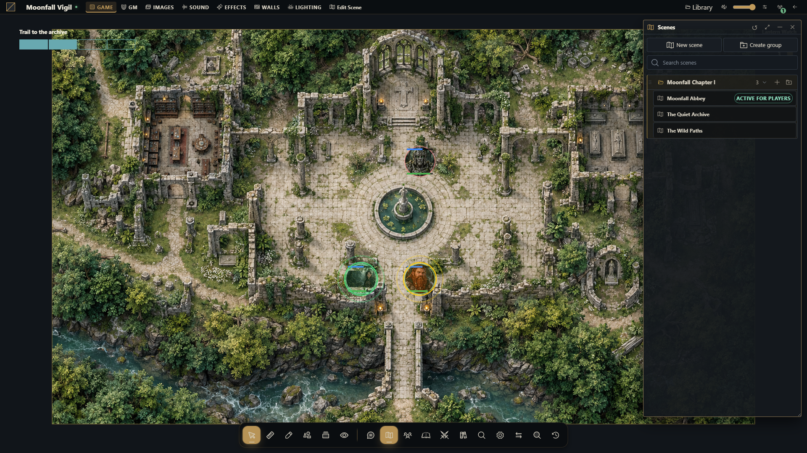
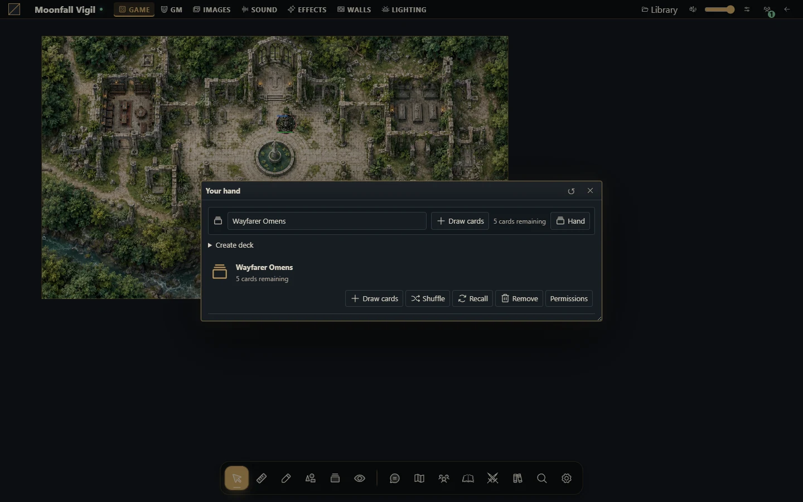

Navegar e conduzir a mesa
Encontre as ferramentas da cena e estabeleça uma rotina confiável para a sessão.

Encontre sua área de trabalho
A mesa reúne o mapa, controles de ferramentas, diretórios de recursos e janelas de fichas e documentos. Os controles disponíveis dependem do seu papel, ferramenta ativa e módulos instalados. O mestre pode preparar material em particular enquanto jogadores continuam na cena transmitida.
As áreas principais são cenas, atores, diários, chat e dados, áudio, cartas, combate e compêndios. O sistema fornece comportamento de fichas e regras; módulos de navegador podem ampliar a interface.
Inicie uma sessão
Abra a campanha e confira o carregamento do sistema e dos módulos necessários.
Abra a cena pretendida como mestre. Confira grade, paredes, iluminação e visão inicial.
Confirme a propriedade dos atores e coloque os tokens necessários.
Abra os diários e materiais de referência; compartilhe somente as páginas pretendidas.
Ative a cena para jogadores e confira uma sessão de jogador.
Peça que enviem uma mensagem, rolem dados e interajam com a mesa antes do encontro.
Trabalhe no mapa
Escolha a ferramenta da operação: seleção e movimento, desenho, medição, paredes, neblina, iluminação, pings ou efeitos. O token selecionado precisa estar sob seu controle e desbloqueado para mover. A ferramenta ativa pode explicar por que um clique seleciona, mede ou desenha em vez de mover uma peça.
Mantenha a complexidade da cena adequada aos navegadores do grupo. A renderização do mapa exige WebGL. Efeitos pesados, imagens grandes e muitos objetos afetam cada cliente de forma diferente; simplifique e compare com uma cena pequena ao investigar problemas.
Reconecte e encerre
Se as atualizações pararem, confira a rede e reconecte. Atualizar a página recarrega o estado autorizado do servidor; não transforma um rascunho local em projeto salvo. Mantenha aberta uma aba interrompida do Builder até concluir a recuperação.
Ao terminar, pare o áudio, confirme o salvamento de edições importantes e faça um snapshot da campanha ou backup da instalação quando adequado. O responsável pode encerrar o Runner com Ctrl+C depois que o grupo sair.
Mais capturas deste guia (2)



